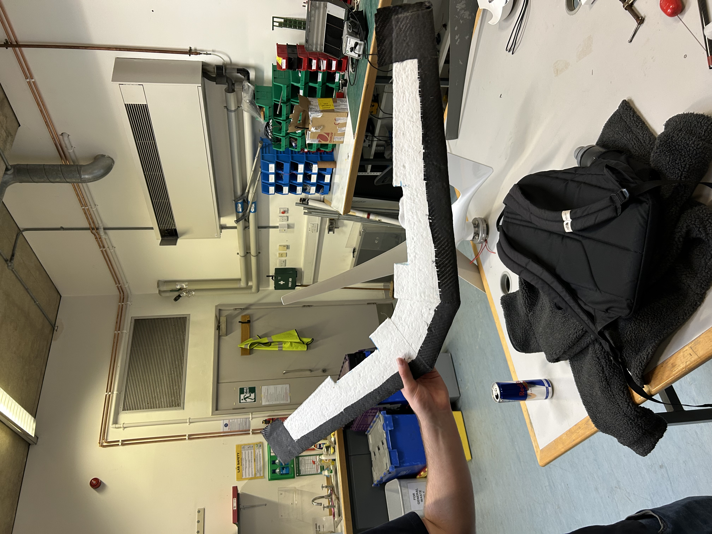

Custom Airframe Manufacturing & Structural Validation
To comply with IMechE UAS Challenge regulation T2.4.5, which restricts the use of Commercial-Off-The-Shelf (COTS) components, I spearheaded the transition from outsourced carbon fiber sections to a fully in-house composite manufacturing workflow. This involved a rigorous R&D phase to replace standard primary/secondary spars and tail booms with custom-fabricated structures.
Flying Wing CAD - To display the configuration and importance of the carbon fibre spars

My iterative process began with wet-layup test pieces using 3D-printed moulds to evaluate the quality of team-manufactured components. Initial experimentation with I-beam configurations—created by joining two wet-laid C-channels—provided excellent bending stiffness but revealed deficiencies in torsional rigidity. This led to the final evolution of a circular cross-section spar with varying diameters and ply counts, optimized for the specific loading cases of our medical UAV.
Spar Manufacturing Process


Carbon Fibre Spar Result
Test 1:


Test 2:

Bending Test: Bending test was performed, where predicted root bending moment was 5.5G, and results show that spar was able to withstand 5.5G. Test til failure point will be done soon. Total mass of this spar was 83 grams.
Composite Wings for Light Weight UAV
Testing EPS foam as a substitute for balsa ribs and film wrap for small drones, this test conducted of, foam wire cut tapered airfoils, then 1 layer of 50gsm glass fibre and 2nd layer with 25gsm, this resultsed in rigid foam wings but downside was EPOXY absorbed by EPS foam during vacuum bagging due to its high pourus characteristics, this meant that, extra weight for not much gain in strength as well bad surface finish which would increase skin friction drag, allowing for a non effiecient drone.
I then wrapped the leading edge of the drone with carbon fibre layer to improve the strength at the stagnation point, to help with bending and flow attatchement over the wing as carbon fibre helped with surface finish. Reason for not wrapping carbon fibre across whole wing was due to RF interference and would have to be to place transmitter underneath drone, which was not in our preferred design choice.



XPS Wing
After realising EPS was too pourus and hard to manage, we switched to XPS foam to produce small UAV wings, which worked alot better, due to its high density, although it does make it heavier slightly the overall strenght is alot higher.


Vacuum Form for RC Plane Fuselage

Electronics Stack

Electronics stack includes the flight controller, GPS, buzzer, strobe light, ESC, Receiver/Transmitter, LiDAR, Air speed sensor, RF locator and GPS tracker. RF locator and GPS tracker will be hook and loop strapped into the stack as required by T2.2.1, T2.11.1 The electronics stack is quickly removable with standard hex tools which allows access to internal electronics for rapid reconfiguration. The stack can move forward and aft to make slight adjustments in CG whilst sitting on top of vibration isolating gromets between the stack and the centre section of the aircraft.